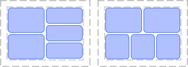
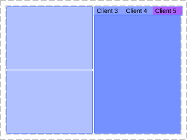
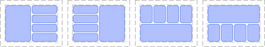

Module awful.layout
Info:
- Copyright: 2016 Emmanuel Lepage Vallee
- Author: Emmanuel Lepage Vallee <elv1313@gmail.com>
Functions
| get (screen) | Get the current layout. |
| inc (i, s[, layouts]) | Change the layout of the current tag. |
| set (_layout[, t=mouse.screen.selected_tag]) | Set the layout function of the current tag. |
| parameters ([t[, screen]]) | Get the layout parameters used for the screen
This should give the same result as “arrange”, but without the “geometries” parameter, as this is computed during arranging. |
| arrange (screen) | Arrange a screen using its current layout. |
| getname (_layout) | Get the current layout name. |
| move_handler (c, context, hints) | Default handler for request::geometry signals for tiled clients with
the “mouse.move” context. |
Object properties
| max_elements | The (soft) limit for the number of children. |
| priority | The priority of the layout compared to its peers. |
| inner_fill_strategy | Define how to distribute the empty space. |
| reflow | When an element is removed, take one away from a lower priority layout. |
Theme variables
| beautiful.layout_cornernw | The cornernw layout layoutbox icon. |
| beautiful.layout_cornerne | The cornerne layout layoutbox icon. |
| beautiful.layout_cornersw | The cornersw layout layoutbox icon. |
| beautiful.layout_cornerse | The cornerse layout layoutbox icon. |
| beautiful.layout_fairh | The fairh layout layoutbox icon. |
| beautiful.layout_fairv | The fairv layout layoutbox icon. |
| beautiful.layout_floating | The floating layout layoutbox icon. |
| beautiful.layout_magnifier | The magnifier layout layoutbox icon. |
| beautiful.layout_max | The max layout layoutbox icon. |
| beautiful.layout_fullscreen | The fullscreen layout layoutbox icon. |
| beautiful.layout_spiral | The spiral layout layoutbox icon. |
| beautiful.layout_dwindle | The dwindle layout layoutbox icon. |
| beautiful.layout_tile | The tile layout layoutbox icon. |
| beautiful.layout_tiletop | The tile top layout layoutbox icon. |
| beautiful.layout_tilebottom | The tile bottom layout layoutbox icon. |
| beautiful.layout_tileleft | The tile left layout layoutbox icon. |
Client layouts
| awful.layout.dynamic.suit.corner | Replace the stateless corner layout. |
| awful.layout.suit.dynamic.fair | Replace the stateless fair. |
| awful.layout.suit.dynamic.fair.horizontal | A fair layout prioritizing horizontal space. |
| awful.layout.suit.dynamic.magnifier | A client in front of a list of other clients. |
| awful.layout.suit.dynamic.manual | Manually declare a layout for the clients. |
| awful.layout.suit.dynamic.tile | A layout with columns and rows. |
| awful.layout.suit.dynamic.tile.left | A tile layout with the slave clients on the left. |
| awful.layout.suit.dynamic.tile.top | A tile layout with the slave clients on the top. |
| awful.layout.suit.dynamic.tile.bottom | A tile layout with the slave clients on the bottom. |
| awful.layout.suit.corner.nw | Corner layout. |
| awful.layout.suit.corner.ne | Corner layout. |
| awful.layout.suit.corner.sw | Corner layout. |
| awful.layout.suit.corner.se | Corner layout. |
| awful.layout.suit. | The floating layout. |
| awful.layout.suit.magnifier | The magnifier layout. |
| awful.layout.suit.max.name | Maximized layout. |
| awful.layout.suit.max.fullscreen | Fullscreen layout. |
| awful.layout.suit.spiral.dwindle | Dwindle layout. |
| awful.layout.suit.spiral.name | Spiral layout. |
| awful.layout.suit.tile.right | The main tile algo, on the right. |
| awful.layout.suit.tile.left | The main tile algo, on the left. |
| awful.layout.suit.tile.bottom | The main tile algo, on the bottom. |
| awful.layout.suit.tile.top | The main tile algo, on the top. |
Tables
| fair.horizontal | Horizontal fair layout. |
Fields
| layouts | The default list of layouts. |
| fair.name | Vertical fair layout. |
| floating.resize_jump_to_corner | Jump mouse cursor to the client’s corner when resizing it. |
| tile.resize_jump_to_corner | Jump mouse cursor to the client’s corner when resizing it. |
Functions
Methods- get (screen)
-
Get the current layout.
- screen The screen.
Returns:
-
The layout function.
- inc (i, s[, layouts])
-
Change the layout of the current tag.
- i Relative index.
- s The screen.
- layouts A table of layouts. (optional)
- set (_layout[, t=mouse.screen.selected_tag])
-
Set the layout function of the current tag.
- _layout Layout name.
- t tag The tag to modify. (default mouse.screen.selected_tag)
- parameters ([t[, screen]])
-
Get the layout parameters used for the screen
This should give the same result as “arrange”, but without the “geometries” parameter, as this is computed during arranging.
If
tis given, screen is ignored, if none are given, the mouse screen is used.- t tag The tag to query (optional)
- screen The screen (optional)
Returns:
-
table
A table with the workarea (x, y, width, height), the screen
geometry (x, y, width, height), the clients, the screen and sometime, a
“geometries” table with client as keys and geometry as value
- arrange (screen)
-
Arrange a screen using its current layout.
- screen The screen to arrange.
- getname (_layout)
-
Get the current layout name.
- _layout The layout.
Returns:
-
The layout name.
- move_handler (c, context, hints)
-
Default handler for
request::geometrysignals for tiled clients with the “mouse.move” context.
Object properties
- max_elements
-
The (soft) limit for the number of children.
This is an hint used by the automatic placement fallback algorithm in case the layout doesn’t provide its own.
It also allows rather complex layout to be defined without an imperative implementation.
If no priority is set, the layout with the highest number of free spot will be chosen.
Type:
- The number or function maximum number of elements contained by the layout or a function returning the value. (default 0)
- priority
-
The priority of the layout compared to its peers.
A “full” layout is composed of many smaller layouts, containers and widgets. When time comes to choose where to add a new client, the “full” layout can either implement its own logic tree or fallback to the default on.
In that case, the priority index will be taken into account. The higher the number is, the higher priority it has. The highest priority layout will “win” as long as the number of elements is below max_elements.
Type:
- The number or function priority or a function returning the priority. (default 0)
- inner_fill_strategy
-
Define how to distribute the empty space.
This property is only available on the tiled sections.
See also:
- reflow
-
When an element is removed, take one away from a lower priority layout.
Type:
- boolean
Theme variables
- beautiful.layout_cornernw
-
The cornernw layout layoutbox icon.
Type:
- surface
See also:
- beautiful.layout_cornerne
-
The cornerne layout layoutbox icon.
Type:
- surface
See also:
- beautiful.layout_cornersw
-
The cornersw layout layoutbox icon.
Type:
- surface
See also:
- beautiful.layout_cornerse
-
The cornerse layout layoutbox icon.
Type:
- surface
See also:
- beautiful.layout_fairh
-
The fairh layout layoutbox icon.
Type:
- surface
See also:
- beautiful.layout_fairv
-
The fairv layout layoutbox icon.
Type:
- surface
See also:
- beautiful.layout_floating
-
The floating layout layoutbox icon.
Type:
- surface
See also:
- beautiful.layout_magnifier
-
The magnifier layout layoutbox icon.
Type:
- surface
See also:
- beautiful.layout_max
-
The max layout layoutbox icon.
Type:
- surface
See also:
- beautiful.layout_fullscreen
-
The fullscreen layout layoutbox icon.
Type:
- surface
See also:
- beautiful.layout_spiral
-
The spiral layout layoutbox icon.
Type:
- surface
See also:
- beautiful.layout_dwindle
-
The dwindle layout layoutbox icon.
Type:
- surface
See also:
- beautiful.layout_tile
-
The tile layout layoutbox icon.
Type:
- surface
See also:
- beautiful.layout_tiletop
-
The tile top layout layoutbox icon.
Type:
- surface
See also:
- beautiful.layout_tilebottom
-
The tile bottom layout layoutbox icon.
Type:
- surface
See also:
- beautiful.layout_tileleft
-
The tile left layout layoutbox icon.
Type:
- surface
See also:
Client layouts
- awful.layout.dynamic.suit.corner
-
Replace the stateless corner layout.
This layout has a master client and a row on the side and bottom of the master client. They are resized so the two “slave” column and row are aligned.

Client count scaling:
The first row is the corner layout and the second one
corner.horizontal
master_count effect:
Unused
column_count effect:
Unused
master_width_factor effect:
Unused
gap effect:
The “useless” gap tag property will change the spacing between clients.

See
awful.tag.setgapSeeawful.tag.getgapSeeawful.tag.incgapscreen padding effect:

See
awful.screen.padding - awful.layout.suit.dynamic.fair
-
Replace the stateless fair.
This is not a perfect clone, as the stateful property of this layout allow to minimize the number of clients being moved. If a splot of left empty, then it will be used next time a client is added rather than “pop” a client from the next column/row and move everything. This is intended, if you really wish to see the old behavior, a new layout will be created.
This version also support resizing, the older one did not—

Client count scaling:
The first row is the fair layout and the second one fair.horizontal

master_count effect:
Unused
column_count effect:
Unused
master_width_factor effect:
Unused
gap effect:
The “useless” gap tag property will change the spacing between clients.

See
awful.tag.setgapSeeawful.tag.getgapSeeawful.tag.incgapscreen padding effect:

See
awful.screen.padding - awful.layout.suit.dynamic.fair.horizontal
-
A fair layout prioritizing horizontal space.
See also:
- awful.layout.suit.dynamic.magnifier
-
A client in front of a list of other clients.
Client count scaling:

nmaster effect:
Unused
ncol effect:
Unused
master_width_factor effect:

gap effect:
The “useless” gap tag property will change the spacing between clients.

See
awful.tag.setgapSeeawful.tag.getgapSeeawful.tag.incgapscreen padding effect:
See
awful.screen.padding - awful.layout.suit.dynamic.manual
-
Manually declare a layout for the clients.
The following properties are honored in the blocks:
- name: The layout name
- priority: The block priority when adding new clients
- reflow: When a client is removed, should it take one away from this and add it to the one with an higher priority.
- max_elements: The maximium number of client for a block
- ratio: The ratio for the block FIXME
Simple tiling layout:
local tile = require('awful.layout.dynamic.base_layout') local manual = require('awful.layout.dynamic.suit.manual') local mycustomtilelayout = manual { { max_elements = 1, priority = 3, layout = tile.vertical }, { reflow = true, max_elements = 2, priority = 1, layout = tile.vertical }, { priority = 1, layout = tile.vertical }, layout = tile.horizontal }A column and a tabbed stack:

local tile = require('awful.layout.dynamic.base_layout') local stack = require('awful.layout.dynamic.tabbed') local manual = require('awful.layout.dynamic.suit.manual') local mycustomtilelayout = manual { { reflow = true, max_elements = 2, priority = 1, ratio = 0.20, layout = tile.vertical }, { priority = 1, layout = stack }, inner_fill_strategy = 'default', layout = tile.horizontal }Using master width factor and alignment:

local tile = require('awful.layout.dynamic.base_layout') local manual = require('awful.layout.dynamic.suit.manual') local mycustomtilelayout = manual { { reflow = true, max_elements = 2, priority = 1, ratio = 0.20, layout = tile.vertical }, { priority = 1, ratio = 0.80, layout = tile.vertical }, ratio = 2.99, inner_fill_strategy = 'center', layout = tile.horizontal }Adding margins::
local tile = require('awful.layout.dynamic.base_layout') local manual = require('awful.layout.dynamic.suit.manual') local mycustomtilelayout = manual { { reflow = true, max_elements = 2, priority = 1, ratio = 0.20, layout = tile.vertical }, { { priority = 1, ratio = 0.80, layout = tile.vertical }, margins = 3, widget = wibox.container.margin }, ratio = 2.99, layout = tile.horizontal }Apply a reflection::

local tile = require('awful.layout.dynamic.base_layout') local manual = require('awful.layout.dynamic.suit.manual') local function gen_with_mirror(hor, ver) return manual { { { reflow = true, max_elements = 2, priority = 3, ratio = 0.20, layout = tile.vertical }, { { reflow = true, max_elements = 1, priority = 2, ratio = 0.20, layout = tile.vertical }, { reflow = true, priority = 1, ratio = 0.20, layout = tile.horizontal }, reflow = true, layout = tile.vertical }, reflow = true, layout = tile.horizontal }, reflection = { horizontal = hor, vertical = ver, }, layout = wibox.container.mirror } end screen[1].selected_tag.layout = gen_with_mirror(false, false) screen[2].selected_tag.layout = gen_with_mirror(false, true ) screen[3].selected_tag.layout = gen_with_mirror(true , false) screen[4].selected_tag.layout = gen_with_mirror(true , true )end
- awful.layout.suit.dynamic.tile
-
A layout with columns and rows.
Variants :
The tile layout is available in 4 variants: tile,
tile.left,tile.topandtile.bottom. The name indicate the position of the “slave” columns.
Client count scaling:
In the image below, the first row represent the tile layout, the second the
tile.leftfolowed bytile.topandtile.bottom. The columns indicate how the layout change when new clients are added.
master_count effect:
The master_count property will affect number of rows in the master columns.

See tag.master_count See
awful.tag.incnmastercolumn_count effect:
When columns are added, this layout will maximize the space available to each clients in the slaves columns.

See tag.column_count See
awful.tag.incncolmaster_width_factor effect:
The master width factor is the ratio between the “master” column and the “slave” ones.

See tag.master_width_factor See
awful.tag.incmwfactgap effect:
The “useless” gap tag property will change the spacing between clients.

See tag.gap See
awful.tag.incgapscreen padding effect:

See
awful.screen.paddingOther properties:
This layout also check the client
masterandslaveproperties. If none is set, thenmasteris used and the new clients will replace the existing master one. - awful.layout.suit.dynamic.tile.left
-
A tile layout with the slave clients on the left.
See also:
- awful.layout.suit.dynamic.tile.top
-
A tile layout with the slave clients on the top.
See also:
- awful.layout.suit.dynamic.tile.bottom
-
A tile layout with the slave clients on the bottom.
See also:
- awful.layout.suit.corner.nw
- Corner layout. Display master client in a corner of the screen, and slaves in one column and one row around the master.
- awful.layout.suit.corner.ne
- Corner layout. Display master client in a corner of the screen, and slaves in one column and one row around the master.
- awful.layout.suit.corner.sw
- Corner layout. Display master client in a corner of the screen, and slaves in one column and one row around the master.
- awful.layout.suit.corner.se
- Corner layout. Display master client in a corner of the screen, and slaves in one column and one row around the master.
- awful.layout.suit.
- The floating layout.
- awful.layout.suit.magnifier
- The magnifier layout.
- awful.layout.suit.max.name
- Maximized layout.
- awful.layout.suit.max.fullscreen
- Fullscreen layout.
- awful.layout.suit.spiral.dwindle
- Dwindle layout.
- awful.layout.suit.spiral.name
- Spiral layout.
- awful.layout.suit.tile.right
-
The main tile algo, on the right.
param:
- screen The screen number to tile.
- awful.layout.suit.tile.left
-
The main tile algo, on the left.
param:
- screen The screen number to tile.
- awful.layout.suit.tile.bottom
-
The main tile algo, on the bottom.
param:
- screen The screen number to tile.
- awful.layout.suit.tile.top
-
The main tile algo, on the top.
param:
- screen The screen number to tile.
Tables
Fields
- layouts
-
The default list of layouts.
The default value is:
awful.layout.suit.floating, awful.layout.suit.tile, awful.layout.suit.tile.left, awful.layout.suit.tile.bottom, awful.layout.suit.tile.top, awful.layout.suit.fair, awful.layout.suit.fair.horizontal, awful.layout.suit.spiral, awful.layout.suit.spiral.dwindle, awful.layout.suit.max, awful.layout.suit.max.fullscreen, awful.layout.suit.magnifier, awful.layout.suit.corner.nw, awful.layout.suit.corner.ne, awful.layout.suit.corner.sw, awful.layout.suit.corner.se, - fair.name
-
Vertical fair layout.
- screen The screen to arrange.
- floating.resize_jump_to_corner
- Jump mouse cursor to the client’s corner when resizing it.
- tile.resize_jump_to_corner
- Jump mouse cursor to the client’s corner when resizing it.